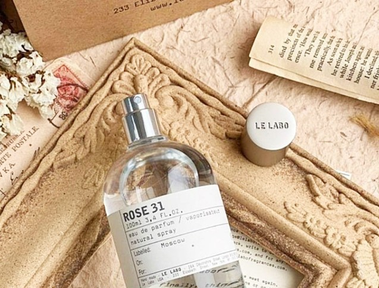
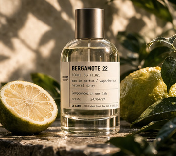
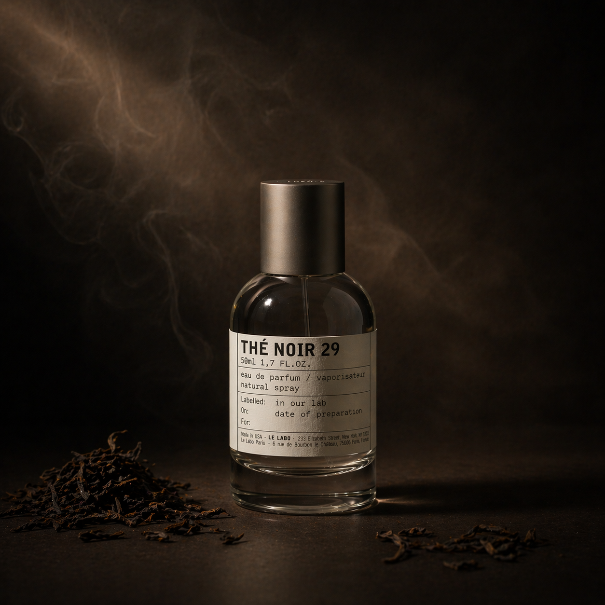
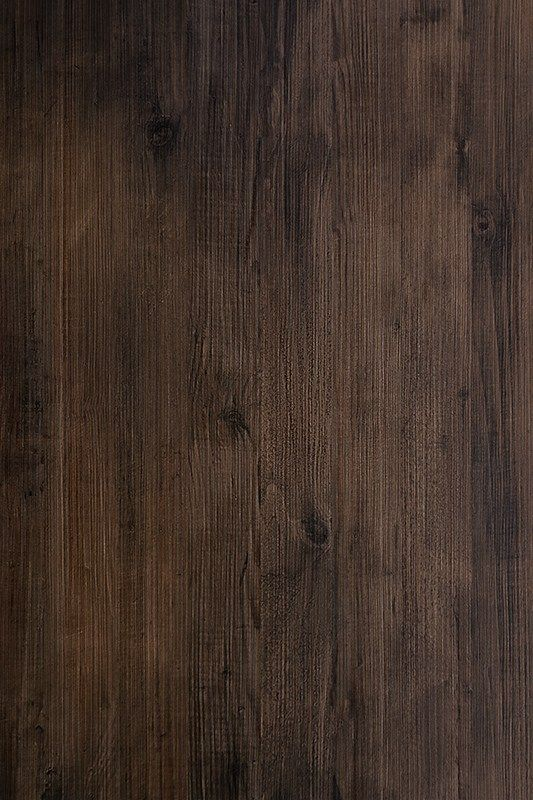

Editorial Snapshot
이번 시즌 에디토리얼 지표
읽을거리 나열이 아닌, 현재 아카이브의 핵심 흐름을 먼저 제시합니다.
- New Stories
- 12편
- Avg Read Time
- 5.6min
- Most Read Topic
- Ingredient
- Completion Rate
- 78%
The JOURNAL · VOL. 42
원료 데이터, 조향 철학, 착용 맥락까지 한 페이지에서 읽는 르라보 에디토리얼 아카이브.
Editorial Snapshot
읽을거리 나열이 아닌, 현재 아카이브의 핵심 흐름을 먼저 제시합니다.
Topic Filter
필터를 선택하면 아카이브 카드가 주제별로 정렬됩니다.
전체 아카이브를 표시 중입니다 · 8편의 기록
Featured · VOL. 42
이번 호 헤드라인 2편 · 조향 철학과 원료 현장이 교차하는 장면들

Archive
원료의 탄생부터 조향의 마지막 마침표까지 · 이번 호 기준 최근 6편
6 of 6 shown






선택한 주제의 아카이브가 없습니다. 다른 필터를 선택해 주세요.
월간 평균 신규 3–5편 발행 · 매월 1일 업데이트
Reading Path
이미지로 맥락을 잡은 뒤, 본문·CTA 순으로 읽으면 원료 → 취향 → 구매까지 끊기지 않습니다.

약 6–8분 · Editorial
산지·수확·추출을 먼저 읽으면 이후 모든 향 설명의 기준점이 생깁니다.
TIP원료 페이지의 키 인그리디언트 섹션과 연결해 보세요.
1–2분 · 4단계 선택
감정·상황·계절·무드를 한 번에 정리하면 아카이브 글의 예시 향이 더 선명해집니다.
TIP4단계 선택 후 추천 결과와 유사 향을 비교해 보세요.

3–5분 · 12 scents
저널에서 얻은 언어를 실제 SKU와 맞추면 구매 리스크가 줄고, 레이어링까지 설계할 수 있습니다.
TIP바디·홈 등 크로스 카테고리까지 함께 보세요.
Editor's Note · VOL. 42
이번 시즌은 향 자체보다 향이 쓰이는 장면과 맥락에 초점을 맞춰 콘텐츠를 구성했습니다.


향은 선택하는 것이 아니라, 자신이 어떤 장면에 놓이고 싶은지를 기록하는 일이다.
— Editorial Lead, LE LABO Journal
르라보 저널은 단순 브랜드 스토리 아카이브가 아니라, 실제 구매·사용 의사결정을 돕는 읽기 도구를 지향합니다. 이번 호는 원료의 출처 신뢰성, 조향 의도, 착용 장면을 한 흐름으로 연결해 배치했습니다.
Stay Subscribed
계절의 향과 연구소 이야기를 매월 1일 이메일로 받아보세요. 광고성 발송 없이 에디토리얼만 전달됩니다.
가입 즉시 지난 호 요약 PDF 발송 · 언제든 한 번의 클릭으로 해제 가능
지난 호
지난 호 아카이브는 VOL. 43부터 순차적으로 공개됩니다.